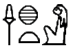
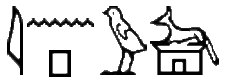
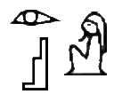
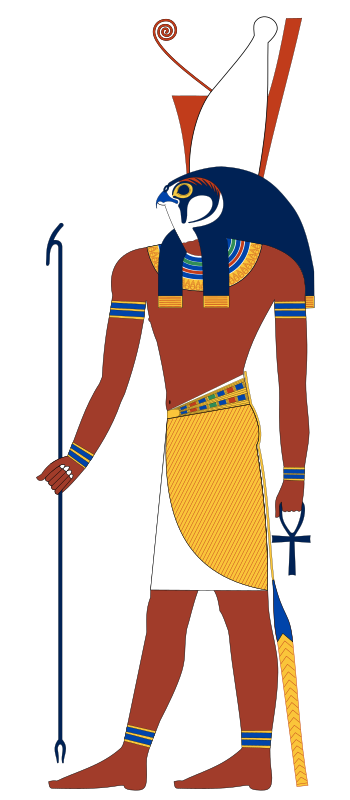
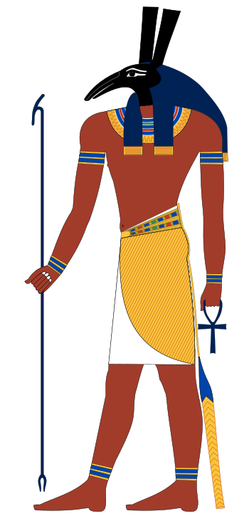
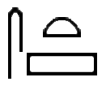

|
Ra
|
Período del Reino Antiguo |
Mar Nun |
Ra es el dios del Sol y del origen de la vida en la mitología egipcia. Es el símbolo de la luz solar, creador de vida, y responsable del ciclo de la muerte y la resurrección. Dios que representa el sol del mediodía, en su máximo esplendor. |
Creador del mundo
Encargado del día y la noche
Padre de los primeros dioses
|
|
Sejmet

(Sekhmet)
|
Período del Reino Antiguo |
Ra y/o Hathor |
Sejmet fue una diosa de la mitología egipcia, símbolo de la fuerza y el poder. Era considerada la diosa de la guerra y de la venganza, pero también la diosa de la curación. Se decía que su aliento creó el desierto. Era la protectora de los faraones y los guiaba en la guerra. |
Ajusticiadora de los infieles |
|
Anubis

(Inpu)
|
Período predinástico |
Desconocidos |
Anubis es el nombre egipcio del guardián de las tumbas asociado con la muerte y la vida después de ésta en la religión del Antiguo Egipto, señor de las necrópolis y patrón de los embalsamadores, representado como un gran cánido negro acostado sobre su estómago, probablemente un chacal o un perro salvaje, o como un hombre con cabeza de chacal. |
Acompañamiento de los difuntos al Juicio de Osiris |
|
Osiris

(Wsjr)
|
Período de la 1ª Dinastía |
Geb y Nut |
Osiris es un dios y rey mítico del Antiguo Egipto. Según la mitología egipcia fue el inventor de la agricultura y la religión y su reinado fue beneficioso y civilizador. Murió ahogado en el Nilo, asesinado en una conspiración organizada por Seth, su hermano menor. A pesar del desmembramiento de su cuerpo, fue devuelto a la vida por el poder mágico de su hermana Neftis y su esposa Isis. |
Juez sobre los muertos
Creador de vida vegetal
|
|  |
Horus
|
Prehistoria |
Osiris e Isis |
Horus era el dios celeste en la mitología egipcia. Se le consideraba como el iniciador de la civilización egipcia. Era el dios de la realeza en el cielo, de la guerra y de la caza. Horus intentó vengarse de Set tras el asesinato de su padre, y muchos de los antiguos mitos egipcios describen sus conflictos con él por el trono de Egipto. |
Protege la barca de Ra
Protege a Osiris en el Duat
|
|  |
Set

|
Prehistoria |
Geb y Nut |
Set es un dios de los desiertos, las tormentas, el desorden, la violencia y los extranjeros. Es representado como el usurpador que mató y mutiló a su propio hermano, Osiris. La hermana-esposa de Osiris, Isis, recompuso su cadáver y resucitó a su hermano-marido muerto con la ayuda de la diosa Neftis. La resurrección duró lo suficiente como para concebir a su hijo y heredero, Horus. |
Protector de la barca de Ra
|